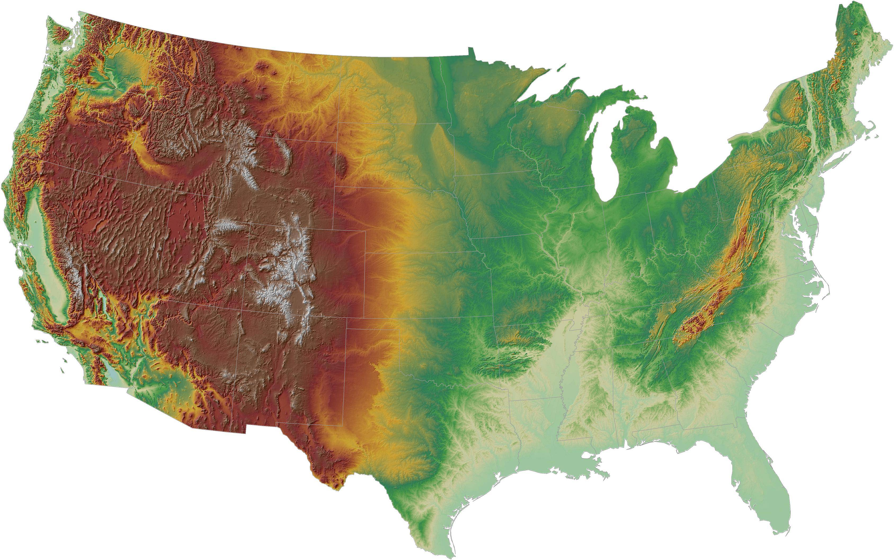

Home
CLARK
THOMAS
GARRETT
GULICK
☰
PHOTO ALBUM
Some photos related to the ancestry of ALAN CLARK GULICK, proven and probable. Click on menu surnames to view. For detailed genealogy see:
Rootsweb
Also
WikiTree
THOMAS and Others Tree
GEDmatch
Ancestry Tree
Ancestry.com
For DNA Test see:
2 DNA Tests
For THOMAS family notes see:
William C. THOMAS
For THOMAS family notes see:
Marine D. THOMAS
For THOMAS family notes see:
Nancy Ann THOMAS
For THOMAS family notes see:
James William Clark
For THOMAS family notes see:
THOMAS family AND Misc notes continued...

USA
America